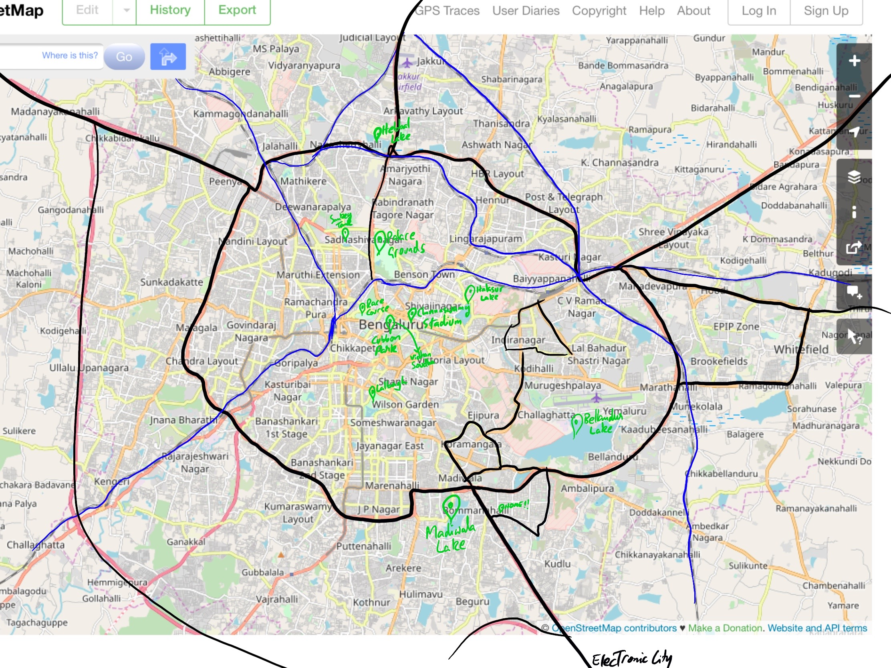
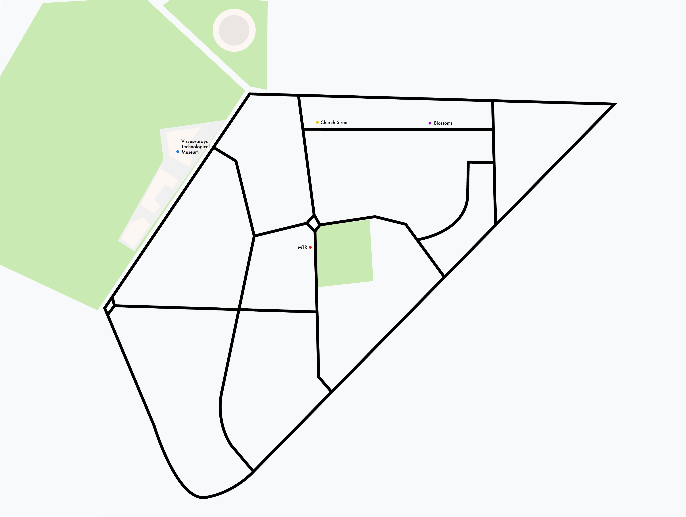
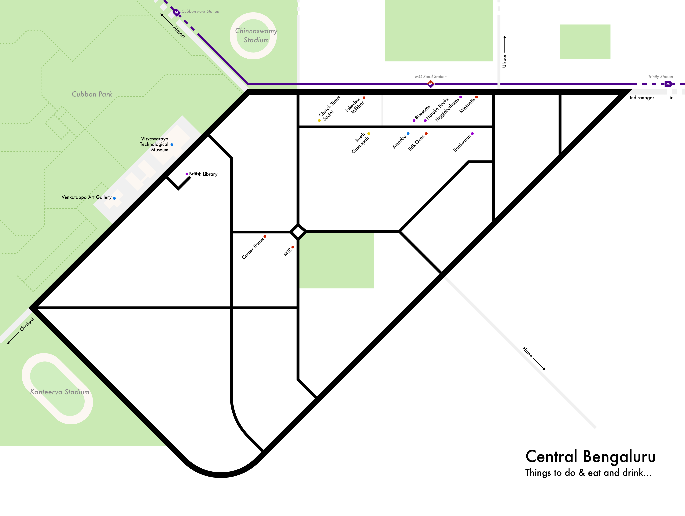
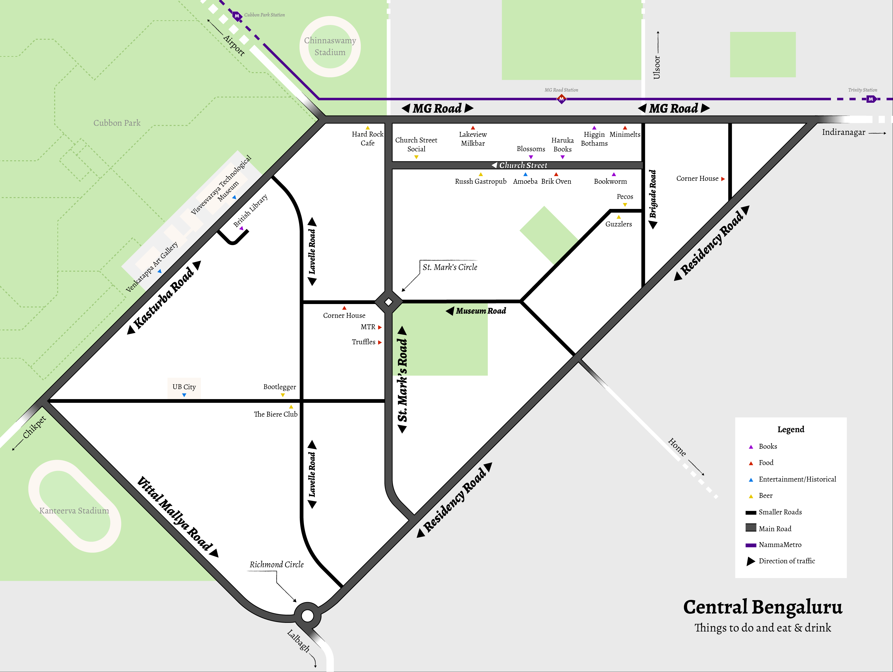

Schematic Map of Central Bengaluru
Bengaluru has many, many attractions, and being able to get to your destination on time is quite challenging, what with the notorious traffic. Designing a schematic map of the city would undoubtedly help people in planning how they can navigate the city and get to all the places they want to in good time.
I thought long and hard about what it is about Bangalore that people would want to see, and the usual suspects came up with Kora, Indiranagar, Church street, etc. So I proceeded to sketch out the entirety of Bangalore. The main outer ring road and the roads leading to Kora and IRN are in black and I thought I could use the rail tracks as as a reference. But this unfortunately isn't how anyone sees Bangalore. Also, I couldn't quite think about anything that I would want people to see within the various localities. So what was the point of the map? Zilch.
Often, when roaming around Central Bengaluru, I have found myself feeling a little lost at times, with similar looking roads, and all the designerly cafés. The junction formed at MG Road and St. Mark's Road, with the adjoining roads of CHurch Street, Brigade Road, Residency Road, and Lavelle Road can, to a fresher, be quite confusing. This confusion is compunded after a couple of rounds of beer :P
Also, there are many great places in and around this area, attractions for the morning, noon, evening, and late into the night. In a city ruled by tech parks, it is quite hard to find things to do that don't just involve great food and discounted drinks. Given just how happening Central Bengaluru is, I decided to sketch out a schematic that can help people traverse this terrain, come sun, come rain, come books, come beer.
I sketched out the area and places of interest to start with.

This afforded points of interests such as Blossoms and Higginbothams for book lovers and the Art Gallery, Museums, Vidhan Soudha for the history and monument lovers. And this being Bangalore, of course there's great food everywhere you look!
I tried to initially work with the basic shape. Tracing it out, and looking at the basic shape.

I was able to eliminate many of the raods that didnt quite add to the schematic through this process.
Tried some initial geometricisation without forcing it too much. Tried to do some primitive labelling. Red for food, yellow for drinks, purple for book lovers, and blue for places of interest.
More geometricisation followed and the I decided to help orient the people with respect to Church Street, St.Marks Road and MG Road by turning it slightly.This gave the junctions importance, and as is seen the city, quite easy to identify given the number of people hanging around at these locations. I also started adding other details such as the green space for Cubbon Park and an abstraction of Chinnaswamy stadium.

This is the point where I started playing around with fonts as well. Initially kept a clean Helvetica, tried EK Mukta, but settled for Futura given what this area represents and the geometricisation of the map. But changed it later on good advice from Prof. Venkatesh Rajamanickam and Rasagy Sharma, and also to save space.
Places that didn't quite require curving of the road, or rather, where the road wasn't perceived as curved were made staright. I also started to give certain roads more importace, to help audiences orient themselves better. Refined my list of landmarks and started placing them on the map. Added the metro line, although not as prominent a marker, nonetheless, context giving.
Refinement was still required, especially making roads more or less prominent, being able to tell where a place is, and of course, the legend was missing. For the final iteration, these are the nuances I worked on. Detals such as the Visvesvaraya Technological Museum, Richmond Circle and pathways inside Cubbon Park were added to give the map more of a finish.
The final schematic of Central Bengaluru is present one below.
